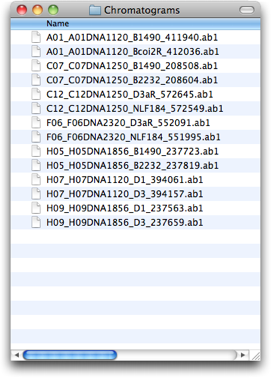
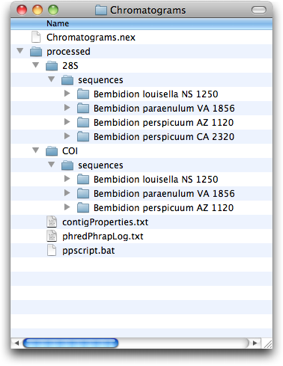
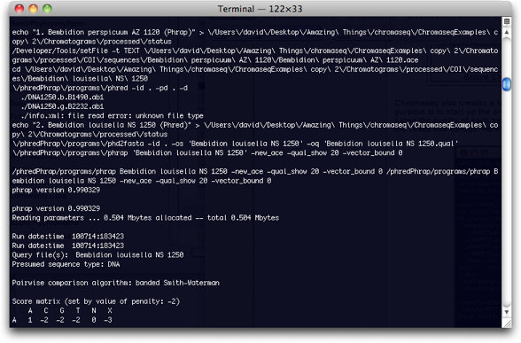
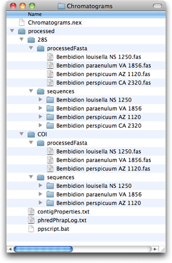
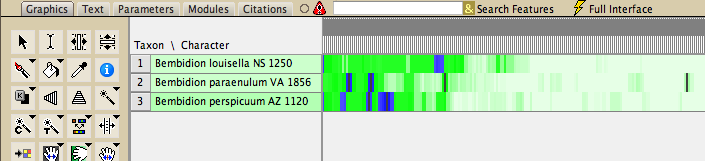
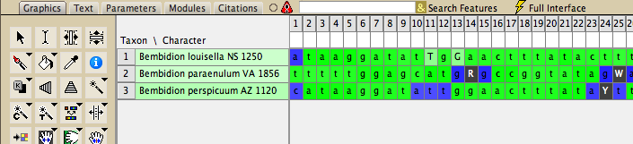
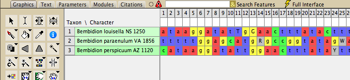
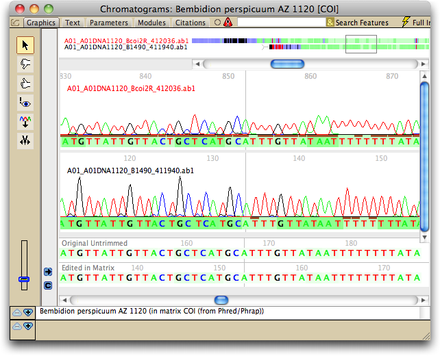

Chromaseq will take a directory of chromatograms, shown on the left, below, and examine the names of the files contained therein. In the file name it will find the code for the sample, as well as the name of the primer. It will use the primer name to determine the name of the gene fragment, and will reorganize the directory into subdirectories, one for each gene fragment, and within those, one for each sample, as shown on the right, below.
|  |  |
Before Chromaseq processing |
After Chromaseq has reorganized files |
Chromaseq also creates a text file containing scripts that are then processed by the operating system. The primary purpose is to start up the program Phred, and send it commands to make base calls on each chromatogram and judge the quality of each base call. The file also starts up the program Phrap, and sends it commands to assemble the reads into contigs. Here's some of the output from this step:

After Phred and Phrap have finished, Chromaseq then examines the files created, including the .ace file containing the contigs, and modifies the files, including adjusting base calls in the contigs if double peaks are present in higher-quality reads. It also moves the FASTA files produced to a separate directory:

If so chosen, Mesquite's Chromaseq will also import the sequences into a Mesquite project, along with the quality scores as judged by Phred and Phrap, and links to the chromatograms themselves. By default, the data will be presented as character matrices with cells colored by the Phred/Phrap quality scores (with white being very high quality, darker green being lower quality, and blue being lowest quality), and as a bird's eye view:

If we turn of bird's eye view:

Of course, these (currently unaligned) sequences can also be viewed in more standard ways:

As the links to the chromatogram files are preserved, Chromaseq can present a view of the chromatograms for each sequence:

In this window, base qualities can be shown for each read and for the consensus sequence, and conflicts are indicated. Bases calls can also be adjusted in this window, with those edited bases automatically transferred to Mesquite's data matrix.
You can see a short video of these steps in action.
Chromaseq provides other tools as well, such as a means to make submission of sequences to GenBank somewhat less painful.